Microtonalidad, armonía y ritmo
Introducción · escuchar antes de medir
¿La música de Angine de Poitrine encaja en un estilo existente o es una propuesta nueva?
KEXP, sesión en Rennes (Trans Musicales).
Introducción · la banda y su instrumento
Introducción · lo que dicen ellos y lo que suponemos
La banda puede ser típica en cada dimensión (armonía, melodía, ritmo) de un estilo distinto, pero atípica en la combinación: una recombinación nueva de lenguajes existentes.
Lo elegimos nosotros al investigar su armonía en Hooktheory. Ninguna fuente pública lo cita como influencia.
Fuentes: podcast Aucard de Tours y entrevistas en video (ver referencias).
Introducción · el vacío y el aporte
Las herramientas estándar piensan en 12 notas: music21 comprime todo a 12 clases y los transcriptores automáticos redondean el cuarto de tono al semitono más cercano. Para esta música, medir en 12 es borrar lo que la hace distinta.
Las 24 clases de altura de una octava: amarillo, las 12 de siempre; azul, las 12 en cuarto de tono que un análisis en 12 notas pierde.
Transcripción y análisis armónico abiertos en 24-EDO, desde el audio.
Comparación con corpus reales de estilos, calibrada para no exagerar la novedad.
Una respuesta medida a la pregunta: ¿estilo existente o propuesta nueva?
Metodología · supuesto → evidencia → decisión
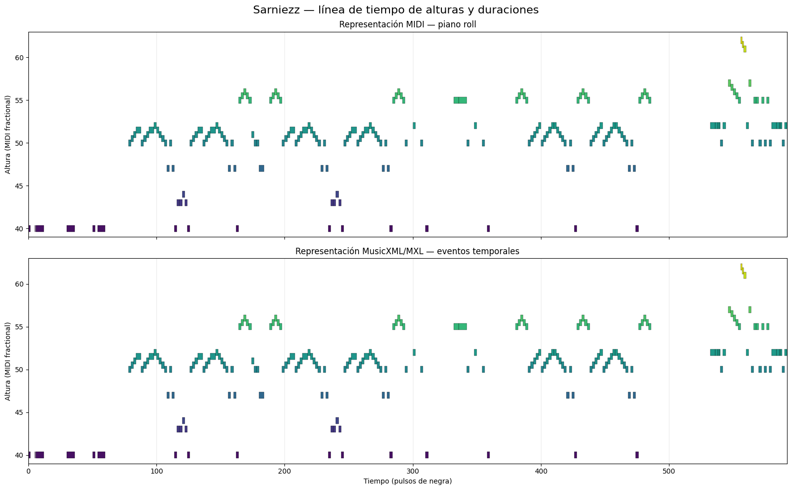
Primer cuaderno (Colab): la partitura de Sarniezz leída como MIDI y MusicXML.
Primera idea del trabajo de grado (tres meses): el bajo de Sarniezz (279 s) y su partitura de MuseScore (196 notas), con Fabienk como segunda canción.
| Suponíamos… | El audio mostró… | Adoptamos… |
|---|---|---|
| Cuartos de tono solo en una zona del mástil (Z24 abajo, Z12 arriba) | Un árbol por registro decide de antemano dónde puede haber microtonos | Toda la transcripción en la rejilla de 24-EDO |
| La partitura publicada es la verdad | La partitura también se equivoca; la de Fabienk es de una versión en vivo | Referencias corregidas de oído y arbitraje a ciegas |
| pYIN sobre la mezcla basta para la melodía | Las capas del looper se tapan unas a otras | Separar guitarra y bajo (Demucs) y consenso entre vueltas |
| Secciones por timbre: MFCC y una red neuronal | 43 % de acierto; la forma la marca el looper, no el timbre | Detectar los ciclos por repetición |
Metodología · de la frecuencia a la casilla de 24-EDO
Una octava en 24-EDO. La nota marcada es Mi+ (MIDI 52.5): un cuarto de tono que el redondeo a 12 notas convertiría en Mi o Fa.
También se usaron la transformada de Fourier, la escala Mel y los MFCC para describir el audio. Quedaron como contexto: el análisis final trabaja con alturas y tiempos.
Metodología · por qué no bastó
Conclusión: había que pasar de describir la señal a transcribir notas, compases y acordes.
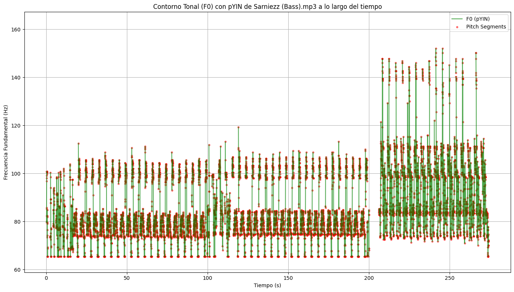
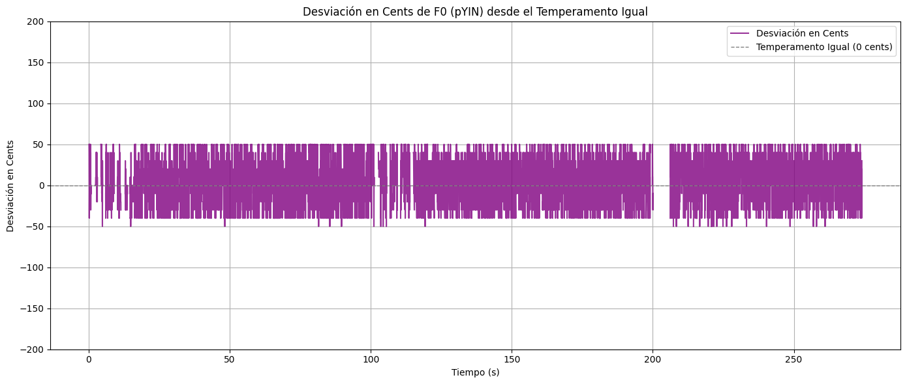
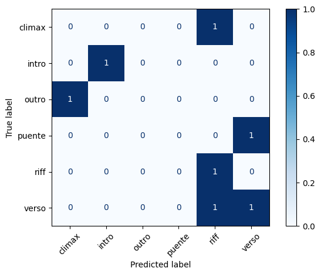
Primer cuaderno: contorno pYIN del bajo (arriba), desviación en cents y matriz de confusión de la red por sección.
Metodología · de Hooktheory a 24-EDO
Al estudiar a Primus en Hooktheory encontramos su formato: la melodía en un piano roll y el acorde de cada compás debajo. Nuestro tabroll hace lo mismo en 24 filas por octava y lo saca todo del audio.
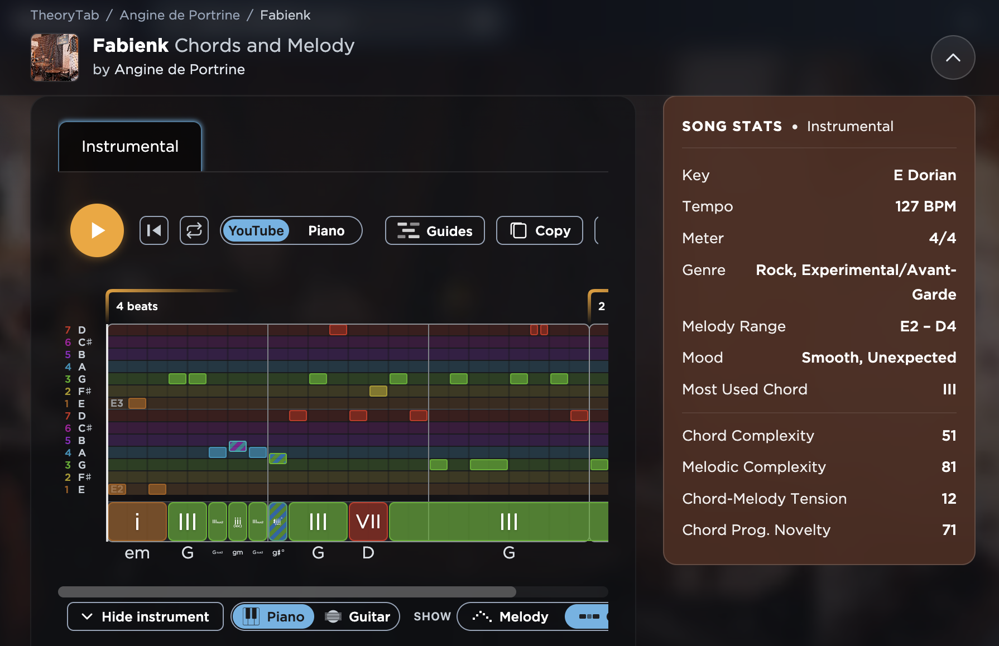
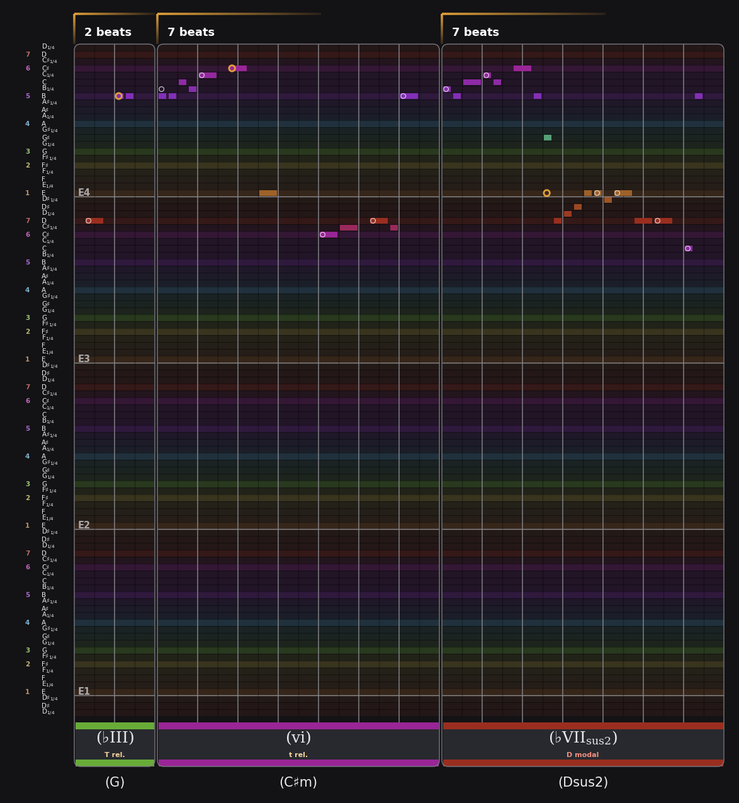
Metodología · una referencia para medir y una teoría para nombrar
Guitar Pro y MuseScore (Sarniezz, Fabienk, Yor Zarad) y la transcripción de la sesión de KEXP (Mata Zyklek), corregidas de oído contra clips de la grabación.
Calidades de acorde, grados tonales y modales, y una medida del centro en tres partes para música sin dominante. Las funciones siguen a Riemann y los ejes a Lendvai.
Piston deja fuera las escalas microtonales: los grados en cuarto de tono quedan con función «neutra».
| Calidad | Tercera | Pasos de ¼ |
|---|---|---|
| 5 (quinta sola) | — | — |
| m (menor) | 3m · 300 cents | 6 |
| n (neutra) | 350 cents | 7 |
| M (mayor) | 3M · 400 cents | 8 |
| dism · aum | 3m · 3M | 6 · 8 |
| sus2 · sus4 | 2.ª · 4.ª | 4 · 10 |
Las calidades de Piston extendidas a 24-EDO: la tercera neutra (n) solo existe con cuartos de tono.
Metodología · cada idea se mide y se adopta o se descarta
| Idea | Qué pasó | |
|---|---|---|
| Consenso entre vueltas del looper | Más rápido y estable | adoptada |
| Atracción al registro de la melodía | Mata Zyklek: 57 → 64 | adoptada |
| Quitar notas sueltas | +3 en las tres canciones | adoptada |
| Guiarse por la partitura (.gp) | La herramienta debe servir sin partitura | descartada |
| REPET (separar lo repetido) | Deja solo el 1–18 % de la melodía | descartada |
| Basic Pitch (Spotify) | Menos melodía y sin cuartos de tono | descartada |
| Unir notas iguales seguidas | Borra re-ataques reales | descartada |
Medida F de notas: el ataque a ±75 ms y la altura a ±25 cents (la misma casilla de 24-EDO).
Donde el cuaderno y la partitura no coinciden, se escucha en orden al azar. En la primera ronda la partitura tenía razón la mitad de las veces.
Semilla fija y huellas SHA-256: dos separaciones daban 57 y 62, así que un hallazgo solo cuenta si se mantiene en ambas.
Metodología · un resultado negativo que también enseña
BS-RoFormer tardó una hora en separar Sarniezz en CPU (unas 13 veces lo que dura la canción).
Un separador mejor limpia la guitarra del resto, pero la dificultad está dentro de la guitarra: el looper superpone varias capas del mismo instrumento, y ningún separador las distingue.
Muestra que el resultado no depende del separador: con dos modelos distintos la medida es la misma. Y ubica con precisión el cuello de botella, que es el siguiente problema a resolver.
Decisión: Demucs sigue por defecto; BS-RoFormer queda como opción (make run-roformer).
Metodología · cada fórmula y lo que produce
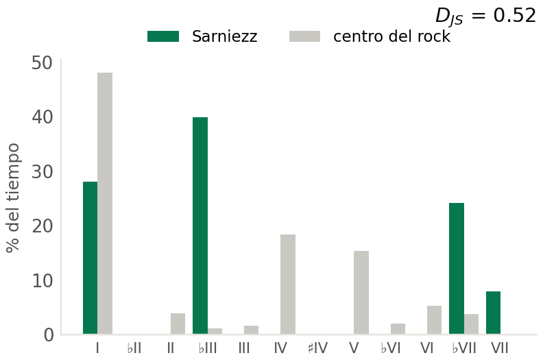
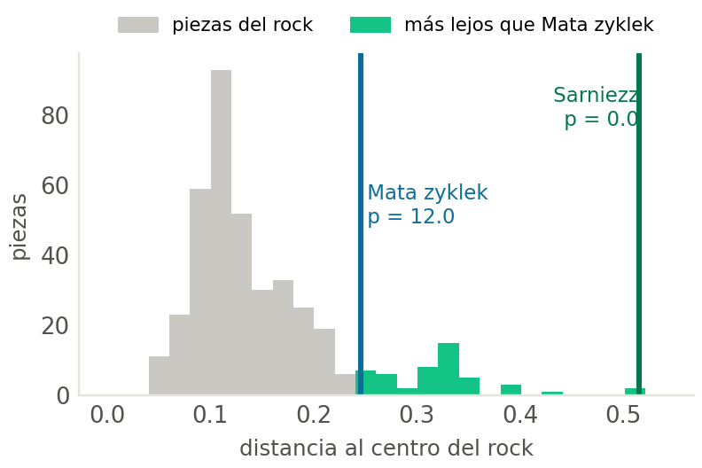
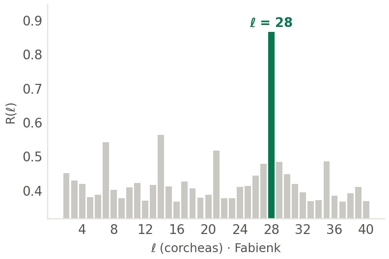
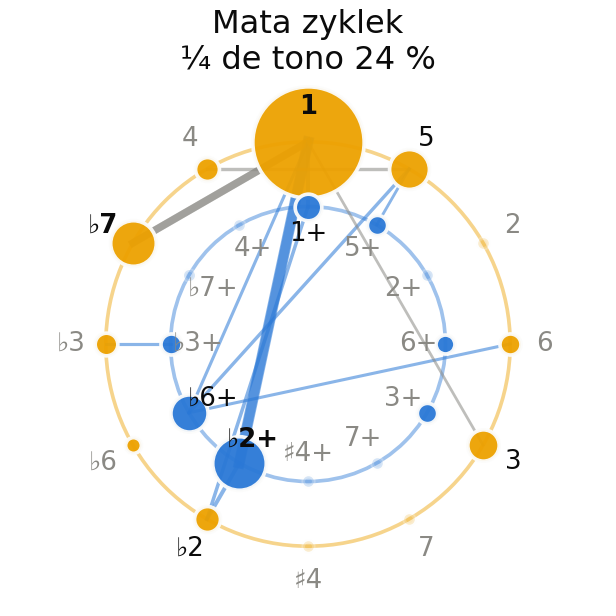
Metodología · las mismas medidas para todas las canciones
Influencias que la banda cita (verde claro) y la comparación propia (gris).
| Estilo | Corpus | Piezas |
|---|---|---|
| Rock | Rolling Stone 200 | 200 |
| Práctica común | Kostka-Payne | — |
| Jazz | iRealPro | 1 186 |
| Pop | Hooktheory, 9 álbumes | 121 |
| Persa | Radif Corpus | 228 |
| Makam turco | SymbTr | ≈ 2 200 |
| Folk irlandés | The Session | — |
Sin corpus simbólico abierto: maqam árabe.
Resultados · una herramienta reproducible
Si un módulo se edita a mano, make extract se detiene: el cuaderno siempre manda.
Resultados · por qué la armonía es fiable aunque la melodía no lo sea tanto
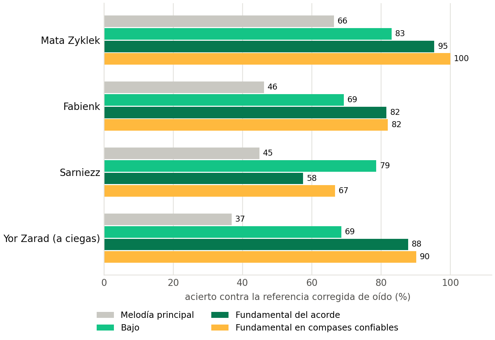
En la fundamental pesa más el bajo (1 frente a 0.6), que es lo mejor transcrito.
Un error en una vuelta queda en minoría frente a las demás.
Una nota una octava arriba es la misma clase de altura.
La melodía exige el ataque a ±75 ms; el acorde, solo qué notas suenan en el compás.
Al cambiar un ajuste de la melodía, Fabienk varió de 41 a 44 % y Sarniezz de 46 a 48 %, y su fundamental no se movió (82 y 72 %).
Resultados · ninguna canción es típica de ningún estilo
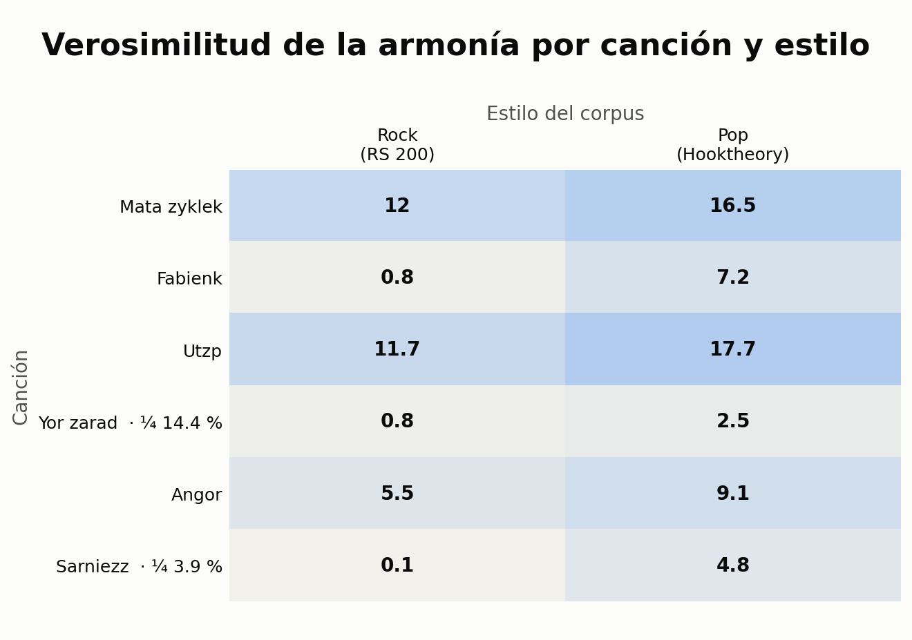
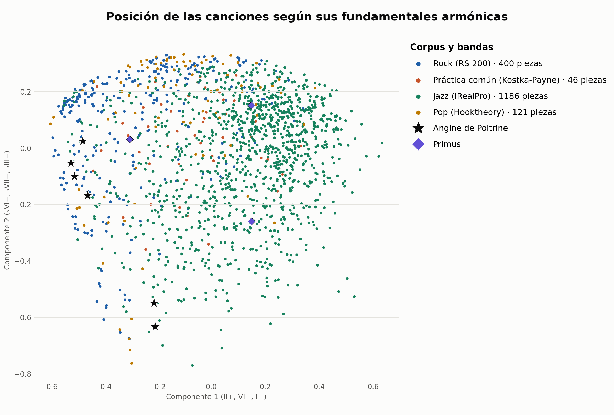
Resultados · 1a
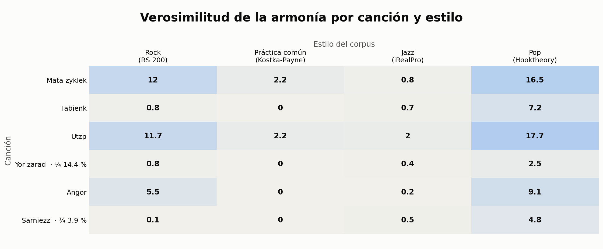
Cada casilla es un percentil: el % de piezas del estilo que están igual o más lejos de su centro que la canción (50 = pieza típica; 0 = más rara que todas). «¼ %»: tiempo con la fundamental en cuarto de tono, llevada al grado de abajo porque ningún corpus tiene cuartos de tono. Corpus: RS 200, Kostka-Payne, iRealPro y 9 álbumes de Hooktheory.
Resultados · 1b
Cada punto del fondo es una pieza de un corpus; los símbolos son las canciones comparadas. La cercanía resume el parecido entre sus repartos de fundamentales. Cada eje es una componente principal; entre paréntesis, los tres grados que más pesan en ella (+ y − indican el sentido).
Resultados · el elemento nuevo
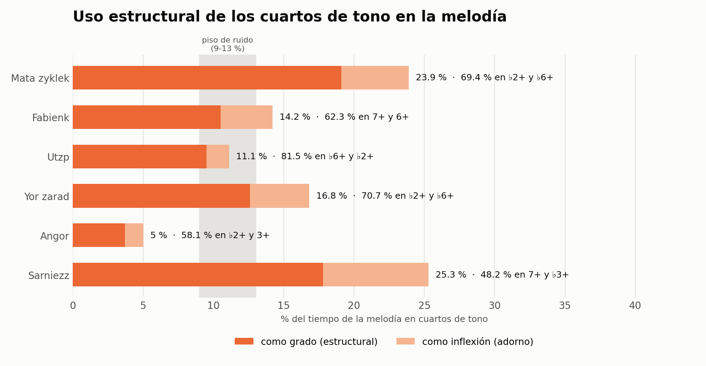
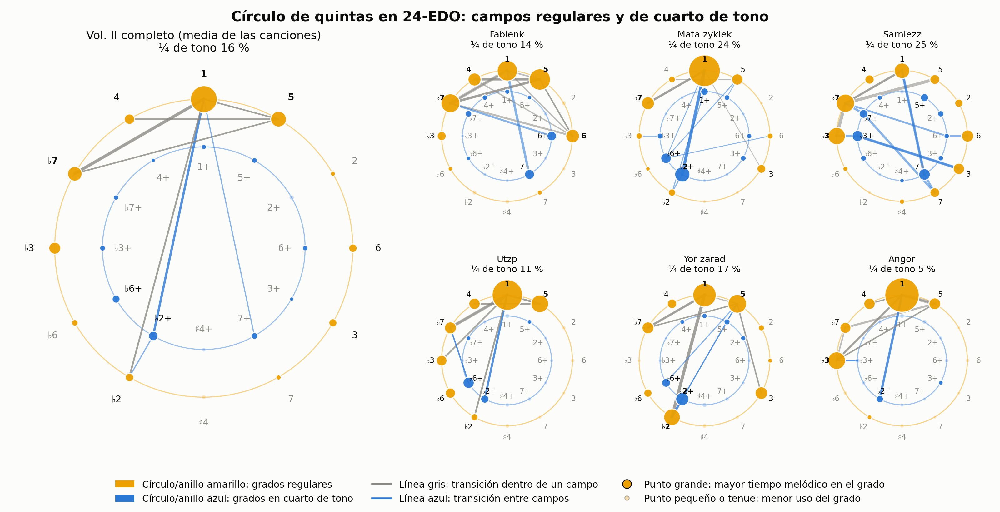
Resultados · 2a
Porcentaje del tiempo de la melodía en cuartos de tono: como grado sostenido (oscuro) o como adorno de paso (claro). La franja gris es el piso de ruido medido en Primus, que no usa cuartos de tono. A la derecha, qué parte de los cuartos de tono cae en los dos grados más usados.
Resultados · 2b
La quinta de 24-EDO mide 14 pasos y mcd(14, 24) = 2: el ciclo se parte en dos campos, los grados regulares (anillo exterior, amarillo) y los de cuarto de tono (interior, azul); cada grado «+» queda junto a su vecino regular. El área del punto es el tiempo melódico; las líneas, los pasos melódicos más frecuentes. El panel grande resume el álbum.
Resultados · un híbrido con un pariente distinto en cada dimensión
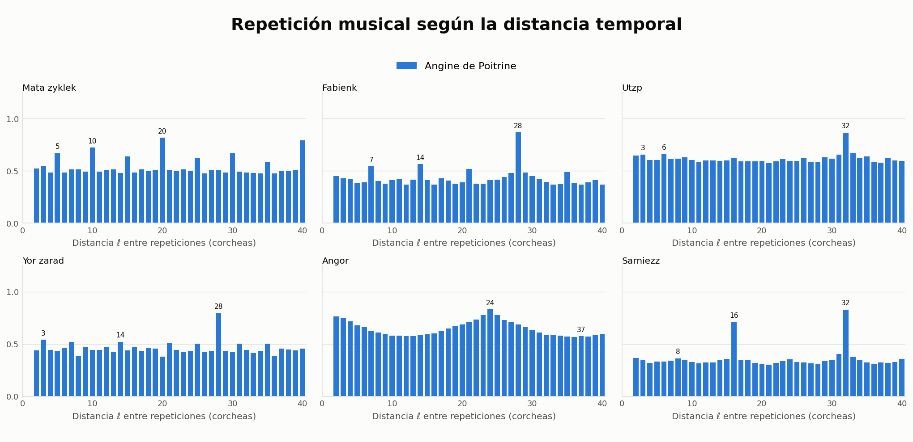
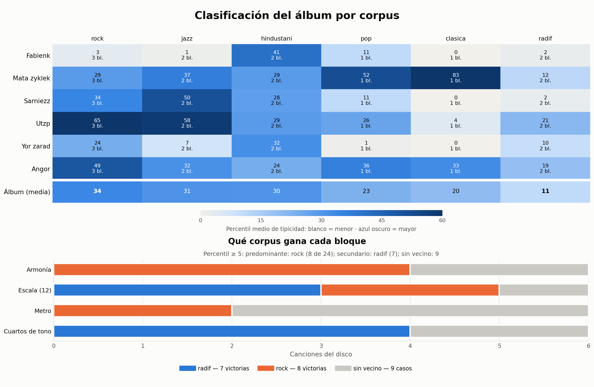
Resultados · 3a
Cada barra mide cuánto se repiten las alturas y los ataques al comparar la música consigo misma ℓ corcheas después (0 a 1). Un pico alto y aislado es un ciclo largo y estable; las cifras sobre las barras son los mejores periodos.
Resultados · 3b
Arriba, el percentil medio de tipicidad de cada canción frente a cada corpus (azul oscuro = más parecido; «bl.» = bloques de rasgos con datos). Abajo, en cuántas canciones gana cada corpus en cada bloque; «sin vecino»: ningún corpus pasa el percentil 5.
Un híbrido con un elemento nuevo
de los casos quedan «sin vecino» en la banda, frente a las piezas reales de rock.
Ninguna canción es típica de ningún corpus (máximo 17.7 sobre 50), y el método no exagera: con rock real casi siempre encuentra vecino.
en cuarto de tono concentran entre el 48 y el 82 % de los cuartos de tono de cada canción.
Son grados de la escala, no adornos: dos familias, frigia (♭2+, ♭6+) y dórica (7+, 6+, ♭3+). Ningún corpus medido las tiene.
por compás en los ciclos del looper (picos en 20 y 28 corcheas), como dice la banda.
Armonía de rock modal, escala cercana al radif y King Gizzard como vecino más próximo; Sarniezz y Fabienk no tienen vecino ni ahí.
Un tabroll que mejore solo, para cualquier canción
Tratar las vueltas del looper como varias tomas de la misma frase para separar las capas.
Elegir el centro tonal de forma robusta en cualquier canción (hoy falla en «Tommy the Cat»).
ProgGP y un corpus de maqam árabe; un tabroll web interactivo; otros microtonales (King Gizzard, Sevish) y uso en la enseñanza.
Bibliografía, corpus, código y fuentes audiovisuales
Gracias